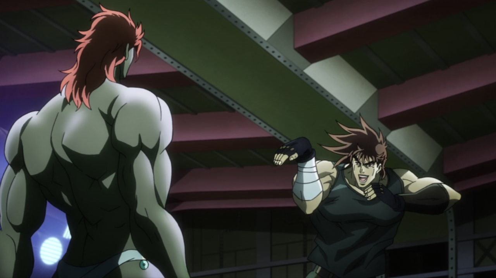
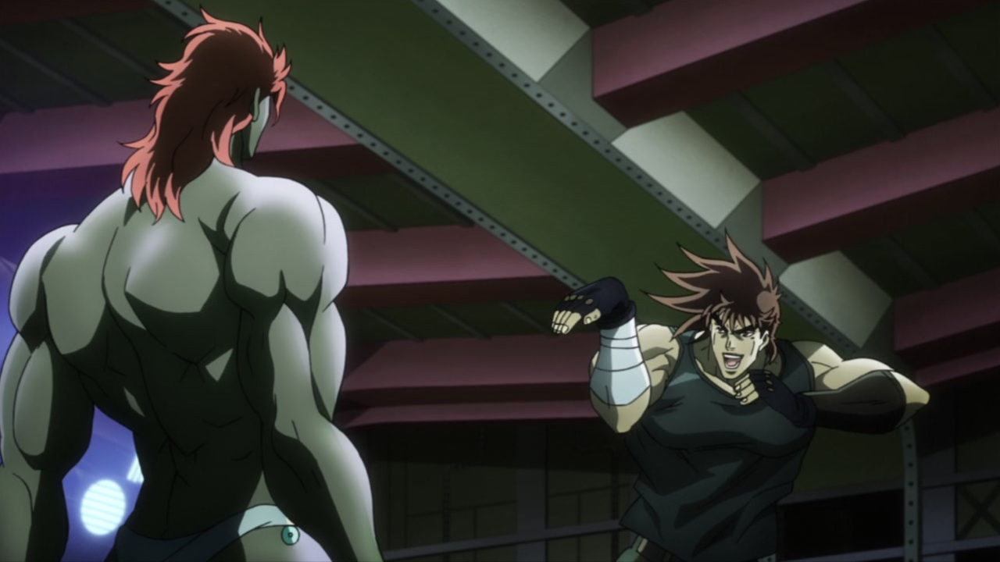

Hello again, everyone! Welcome back for another healthy dose of nazis, aztecs and magic breathing powers. It’s Battle Tendency #13! Let’s go, fellas!
- Let’s begin this analysis with a rather tame comparison. In this scene, Joseph’s eyes have been very slightly retouched:
- And another eye redraw! It seems david production really wasn’t sure on how they wanted their characters' eyes to look:
- This bit of Joseph being a joker has been redrawn, and the animation is slightly different:
- Santana’s eyes are shaded better in the BD version of this shot:
- Have another three wacky redrawn poses from good ol' Joseph:
 

- In this other scene here, the overall shading is slightly different, Joseph’s final expression has been retouched and the bit where he does the old Hol-Horse-and-Polnareff act has slightly different timing:
- These two shots now have a moving background in the BDs:
- Santana, Stroheim and Speedwagon’s faces have all been redrawn here:
- This shot of Santana has been retouched in several ways. Most notably the shading and positioning of the eyes (and eyebrows), some highlights in the hair, the movement of his pupil and the timing with which his arms move. Joseph’s helmet (which in the TV version is behind his head) has also been placed in front of it, in the BDs. Have a bunch of image comparisons and a video:
- This shot is more centered:
- And in this part here, Joseph has his eyes closed for the first few frames of the BD version:
- In this shot, both Joseph and Santana’s bodies have been heavily redrawn and re-shaded:
- And here’s a brighter (and very brief) transition; so brief, in fact, that it’s only two frames long. You’ll have to make do with a simple image comparison for this:
- And a proper brighter shot here:
- This other animation here is not only sharper and brighter as usual, but you’ll notice the timing of the punch is a bit different; moreover, most frames have been redrawn, and Joseph’s mouth is different:
- Here, most frames have been retouched; for some reason, the twirling knife has been made to… twirl differently. The overall timing is also different:
- Santana has been redrawn and has a mouth that makes sense here:
- Have a bunch of redrawn frames of Joseph pulling one of the weirdest attacks of Part 2:
- “This is not my fetish”:
- This animation of Joseph tearing Santana apart is different. The hamon effects are flashier and Santana’s body parts circle around Joseph:
- And the consequent mid-episode freeze-frame is also different:
- This shot is uncensored as well, and the hamon is brighter (and if you look closely enough, you’ll also see some drops of blood):
- And here we have another pretty gory bit:
- Every frame of this sequence has been more or less redrawn, and you know what this calls for! Video+image comparison incoming:
- The BD Joseph is slightly more enraged in this shot here:
- And he’s been graced with a thicker outline here:
- This animation is (you know the drill) Brighter & Sharper:
- As is this other transition:
- This shot here is more zoomed in and redrawn in the BDs, but to be honest… I’m not sure which version is better:
- …Ugh. Just… Ugh. It’s slightly darker. It’s uncensored. Ugh:
- Another uncensored leg stump for your perusal:
- And three redrawn Joseph faces! The first one is really minor, but the other two are a drastic improvement:
- This scene is more zoomed in:
- And here, we have a much better face for Stroheim, an uncensored leg stump and the usual brighter shading that accompanies uncensored scenes:
- Joseph is looking HD as heck here:

- Here, Stroheim’s had a few bits redrawn. His mouth, his nose, his ear and his eye have all received a makeover:
- And here, he’s got slightly better eyes:
- A completely redrawn Stroheim appears (the background is also different):
- Here, some of the outlines on Stroheim are thicker, and his hand is slightly closer to the camera:
- “But enough about me! Let’s kill you!”:
- Here, Stroheim’s been mostly redrawn and the scratch texture overlay is less visible:
- In this shot, both Stroheim and Joseph (’s leg) have been redrawn:
- And we end this comparison on a high note, with three shots of Joseph’s bara legs:
This concludes today’s Bizarre Comparison! This episode was a cinch, compared to the last one. Whew! Another one done, still a lot to go. I also have a bit of news for you! I have recently acquired a more regular way of procuring the BDs, so DiU comparisons should come a bit steadier from now on, starting with DiU #13, coming to you in a few days! After that, the comparison for each BD’s episodes should come 2-3 weeks after said BD’s release date. Yes, that means you’ll get to see Quiet Life Part 1 without having to wait the usual couple of months. And don’t say I don’t treat you well!
Alright, you all be good boys and girls, and I’ll see you next time!